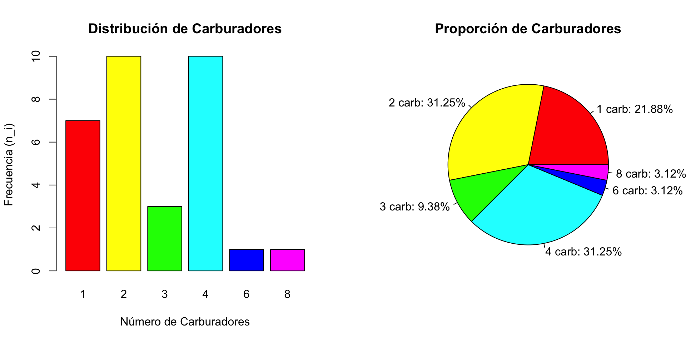

Descubriendo Patrones con Frecuencias Simples
Con datos de ejemplos de R
![]()
2026-03-02
Fecha de la clase: Lunes 2 de marzo de 2026.
¿Qué haremos en clase?
Trabajaremos el tema Distribuciones de Frecuencia Simples para variables discretas o con pocos valores, usaremos un conjunto de datos clásico de R que resultará muy intuitivo y fácil de trabajar a los estudiantes.
Ejemplo desarrolado por el profesor en clase
El Problema: ¿Qué tan familiares son los autos de los 70?
Utilizaremos el dataset mtcars (Motor Trend Car Road Tests. Este dataset contiene información sobre el diseño y rendimiento de 32 automóviles (modelos 1973-74).
Planteamiento
Importante
Imagina que eres un analista de mercado en 1974. Quieres entender la configuración de los motores de la época, específicamente el número de carburadores (carb) que tienen los vehículos, para identificar qué tan comunes eran los autos de alto rendimiento versus los de uso diario.
Plan de acción I
Exploración: Cargar los datos y aislar la variable de interés (
carb).Sintetizar: Crear la tabla de frecuencias que incluya:
- Frecuencia Absoluta (\(n_i\)).
- Frecuencia Absoluta Acumulada (\(N_i\)).
- Frecuencia Relativa (\(f_i\)) y Porcentual.
- Frecuencia Relativa Acumulada (\(F_i\)).
Plan de acción II
- Visualizar: Generar un diagrama de barras y uno de sectores (circular)
- Interpretar: Dar sentido a los números.
Solución en R (RStudio / Kaggle) I
Cargar datos
Visualizar los datos en bruto
Solución en R (RStudio / Kaggle) II
Crear la Tabla de Frecuencias
Solución en R (RStudio / Kaggle) III
Unir todo en un dataframe elegante
Código
Carburadores ni Ni fi Fi Porcentaje
1 1 7 7 0.2188 0.2188 21.88%
2 2 10 17 0.3125 0.5312 31.25%
3 3 3 20 0.0938 0.6250 9.38%
4 4 10 30 0.3125 0.9375 31.25%
5 6 1 31 0.0312 0.9688 3.12%
6 8 1 32 0.0312 1.0000 3.12%Solución en R (RStudio / Kaggle) IV
Visualización
Código
par(mfrow=c(1,2)) #Para ver dos gráficos lado a lado
# Gráfico de Barras
barplot(ni, col=rainbow(6),
main="Distribución de Carburadores",
xlab="Número de Carburadores",
ylab="Frecuencia (n_i)")
# Gráfico circular
pie(ni, labels = paste0(names(ni), " carb: ", tabla_frecuencias$Porcentaje),
col=rainbow(6), main="Proporción de Carburadores") Solución en R (RStudio / Kaggle) V
Visualización gráfico de barras y circular

Conclusiones I
- Dominio del mercado: La mayoría de los autos (casi el 63%) tienen 2 o 4 carburadores (sumar los dos valores en la columna
porcentaje).
Conclusiones II
| Carburadores | ni | Ni | fi | Fi | Porcentaje |
|---|---|---|---|---|---|
| 1 | 7 | 7 | 0.2188 | 0.2188 | 21.88% |
| 2 | 10 | 17 | 0.3125 | 0.5312 | 31.25% |
| 3 | 3 | 20 | 0.0938 | 0.6250 | 9.38% |
| 4 | 10 | 30 | 0.3125 | 0.9375 | 31.25% |
| 6 | 1 | 31 | 0.0312 | 0.9688 | 3.12% |
| 8 | 1 | 32 | 0.0312 | 1.0000 | 3.12% |
Conclusiones III
Rareza: Los autos con 6 u 8 carburadores son excepciones (frecuencia absoluta de 1), representando modelos de muy alto rendimiento para la época.
Ejercicio para desarrollar en clase con asistencia del profesor.
Ejercicio
Importante
Contexto: Utilizando el mismo dataset mtcars, analicen ahora la variable gear (Número de marchas/cambios hacia adelante).
Instrucciones
Identifiquen el número total de observaciones (\(n\)).
Construyan la tabla de frecuencias completa (clonando la lógica del ejemplo anterior).
Respondan:
¿Qué porcentaje de los autos tienen 4 marchas? (\(f_i\))
¿Cuántos autos tienen 4 marchas o menos? (\(N_i\)).
Realicen un diagrama de barras y comenten cuál es la configuración de transmisión más común en esa muestra.
Para finalizar
Comparar el gráfico de barras con el de dona o circular.
- ¿En qué caso es más fácil ver la diferencia entre el grupo de 3 y 4 marchas?
Ejercicio para entregar
Importante
Se debe entregar formato pdf usando la plantilla proporcionada de Quarto markdown, subiéndolo a Cintia (y solo a Cintia), la próxima clase que es el miércoles 4 de marzo.
Trabajo Independiente: Análisis de Dietas Experimentales
Importante
Contexto: En un estudio biológico, se probaron 4 tipos de dietas diferentes para observar el crecimiento de sujetos experimentales. Como analista, debes informar sobre la distribución de estas dietas en la muestra total para asegurar que el experimento esté balanceado.
Preparación de los datos
Carga el dataset y asigna la variable Diet a un objeto para trabajar.
Construcción de la Tabla de Frecuencias
Completa el siguiente bloque para generar la tabla completa. Recuerda que los resultados deben ser precisos.
Código
# Calcula las frecuencias siguiendo la lógica de las diapositivas (pág. 7-10)
ni_dieta <- table(datos_dieta) # Frecuencia Absoluta
Ni_dieta <- cumsum(ni_dieta) # Frecuencia Absoluta Acumulada
fi_dieta <- prop.table(ni_dieta) # Frecuencia Relativa
Fi_dieta <- cumsum(fi_dieta) # Frecuencia Relativa AcumuladaOrganiza la tabla final
Código
tabla_dieta <- data.frame(
Dieta = names(ni_dieta),
ni = as.vector(ni_dieta),
Ni = as.vector(Ni_dieta),
fi = round(as.vector(fi_dieta), 4),
Fi = round(as.vector(Fi_dieta), 4),
Porcentaje = paste0(round(as.vector(fi_dieta) * 100, 2), "%")
)
knitr::kable(tabla_dieta, caption = "Distribución de Frecuencias: Tipos de Dieta")Visualización Personalizada
Genera el diagrama de barras aplicando la Regla de Personalización Cromática (según la letra con que inicia tu nombre).
Interpretación y Conclusiones
Responda de forma detallada (mínimo 3 párrafos):
¿Cuál es la dieta que más sujetos recibió? Indique su frecuencia absoluta (\(n_i\)).
¿Qué proporción del total representan las dietas 1 y 2 juntas? (Use las frecuencias relativas para el cálculo) .
Si el investigador afirma que las dietas están repartidas de forma equitativa, ¿apoyan sus datos esta afirmación? Justifique su respuesta basándose en la tabla.